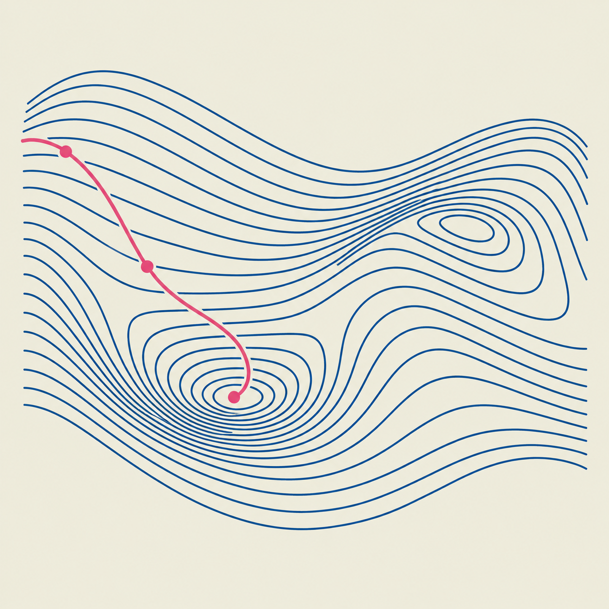
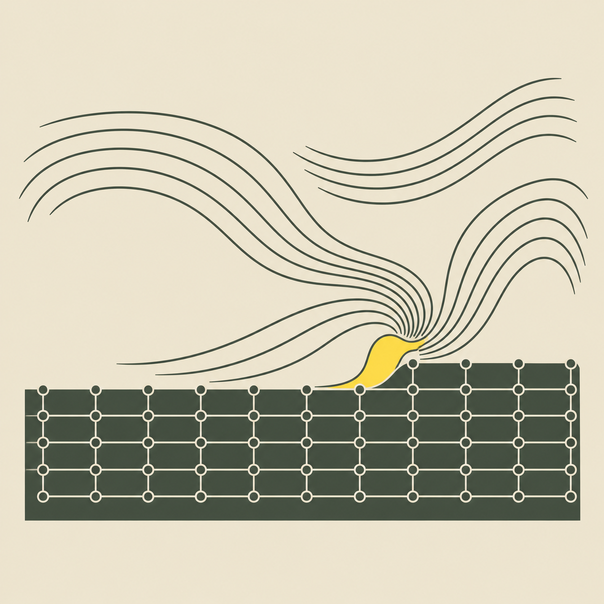
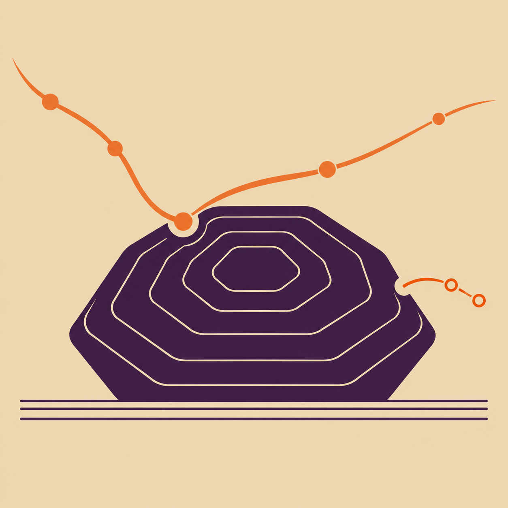
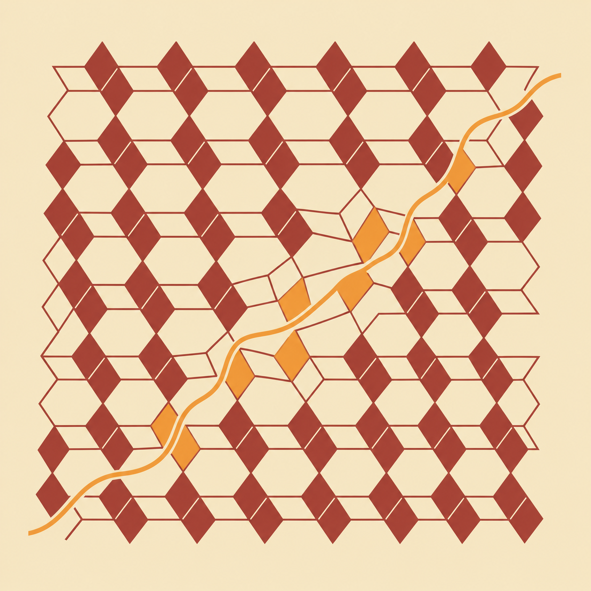

Research opportunities
Join CCML
Explore the chemistry of materials through computation and machine learning.
An invitation to explore
Bring your curiosity.
We invite motivated students to explore machine-learning atomistic simulation, dynamic surfaces and interfaces, catalytic activity and stability, and functional materials design.
For information about available projects and opportunities, contact Prof. Lee. A short introduction and a description of your research interests are a useful starting point.
Contact Prof. Lee →연구 참여 안내
계산화학과 재료 연구에
관심 있는 학생을 기다립니다.
제일원리 계산, 머신러닝 원자간 포텐셜, 촉매 및 에너지 소재 연구에 관심이 있다면 연락해 주세요. 연구 주제와 참여 가능 여부는 이메일로 문의하실 수 있습니다.
간단한 자기소개와 관심 연구 분야를 함께 알려주시면 좋습니다.
Find your direction
Questions we explore

Machine-Learning Atomistic Simulation
머신러닝 원자 시뮬레이션
Learning the energy landscape.

Dynamic Surfaces & Interfaces
동적 표면과 계면
Following materials in motion.

Catalytic Activity & Stability
촉매 활성과 안정성
Understanding performance and its limits.

Functional Materials Design
기능성 소재 설계
Designing structure for function.
Get in touch
Let’s connect.
For research inquiries and opportunities,
please contact Prof. Yonghyuk Lee.
Also listed on the lab homepage:
yhyuk@dongguk.edu
Visit CCML
Dongguk University
Department of Chemical and Biochemical Engineering
Manhae Hall B21130, Pildong-ro 1-gil, Jung-gu
Seoul 04620, Republic of Korea
서울특별시 중구 필동로 1길 30
동국대학교 만해관 B211